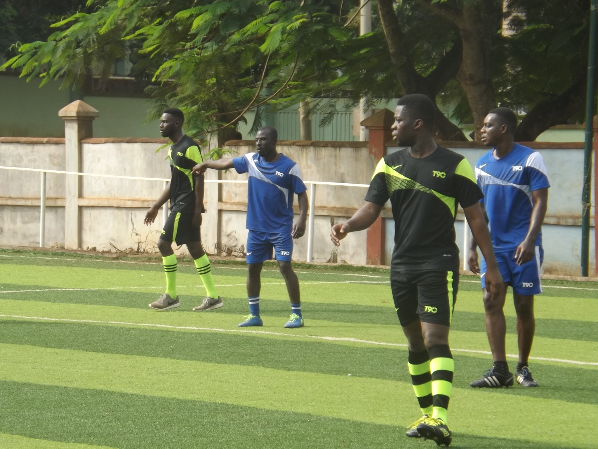

PROFILE
I am a first degree holder from Kwame Nkrumah University of Science & Technology, and my trajectory as a pastor saw me doing a Masters in Christian Theology. I believe I am uniquely positioned and blessed by God to shepherd people into a life of power, glory and excellence. The experiences gained from years of working with and leading people have contributed to a unique set of skills that enable me to relate with people by understanding where they’re coming from and helping them in whichever way may be needed.
How come I found myself as an IT professional? PASSION! I love the magic of computers! This is why I took professional courses in IT to get to where I am now as a Front End Web Developer and a Harware and Networking Engineer. It is a career path I seek to pursue as part of life's journey.
I am also blessed as a husband and a dad of a beautiful baby girl. It’s a wonderful experience.
I have also been privileged to be a lecturer with three Bible schools which I’m the founder of one. I spent three years working as the director and a lecturer of American Bible University, Ghana, Takoradi Campus. I handed over the directorship but continue to lecture there. This was so that I could focus on Church Ministry, working with people, and build for God. I have also been a member of the faculty of Spurgeon Ministerial Institute, Ghana for three years and counting.
Search
HOBBIES
Playing soccer is a passion. I would have opted for a career in soccer if i happen to have another life. It keeps the blood flowing well and the heart pumping well. I also like Fantasy football. More specifically, the English Premier league Fantasy football.

Let's Connect!
My life is basically divided in three parts: an IT Professional, a Pastor, and a Christian Educator.
Utilizing various front and backend technologies involving Bootstrap, Javascript, Ruby, etc, I can help you build fully functional, responsive and reliable websites and applications. My goal is to help you build an ultimately reliable and easy-to-use web applications. I also have experience in hardware and Networking Engineering.

Passionate about the discussion of truth, I welcome every opportunity to share the truths of scripture. Join me every Wednesday on facebook for online Bible Studies.
Being a Christian educator, I deem it a great privilege to share in the lives of ministers of the gospel as they prepare for the work of ministry.